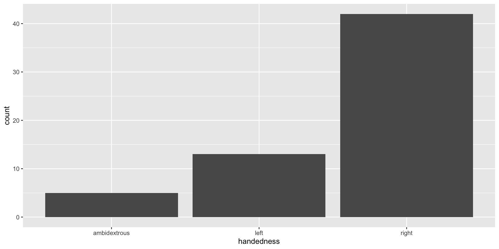
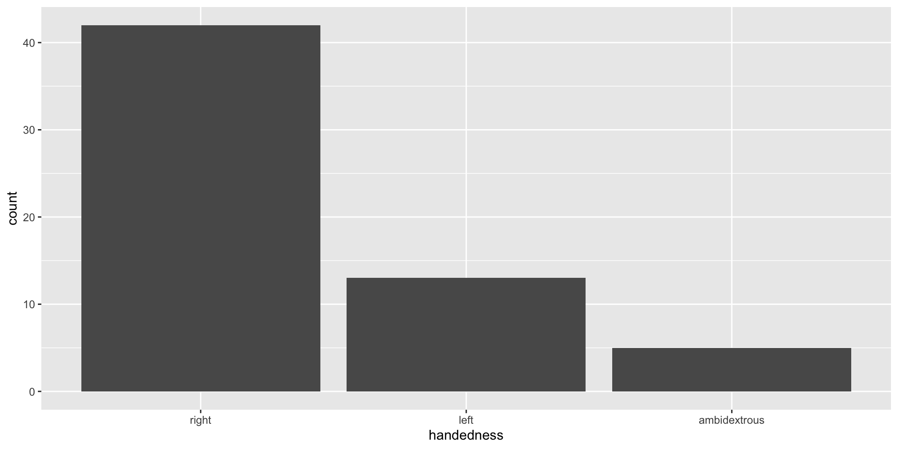
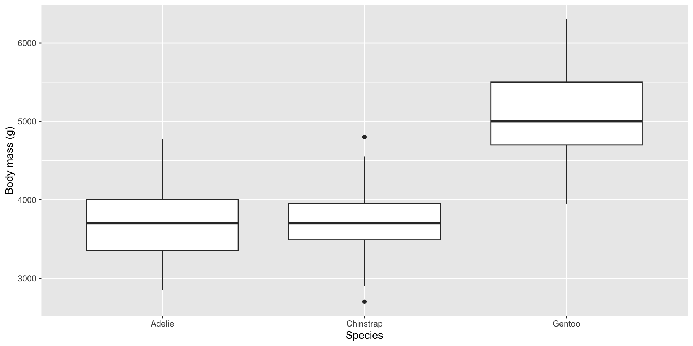
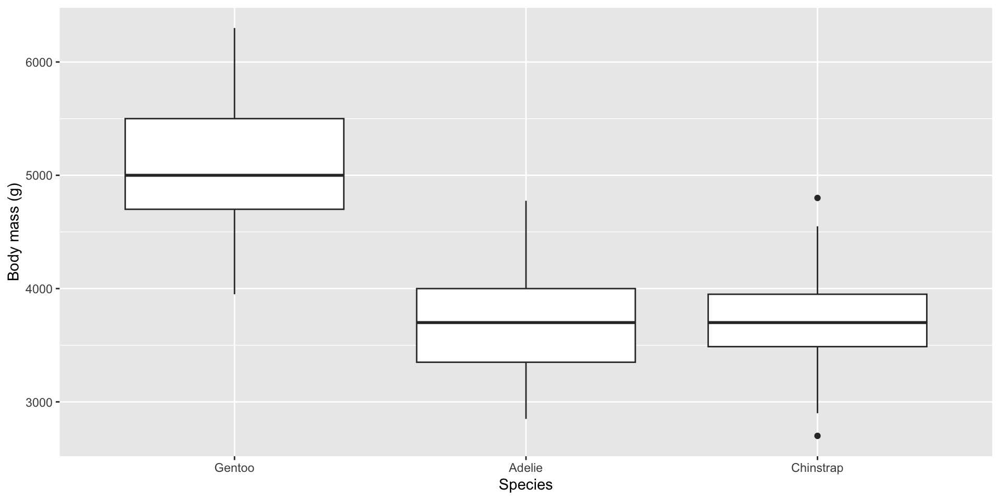
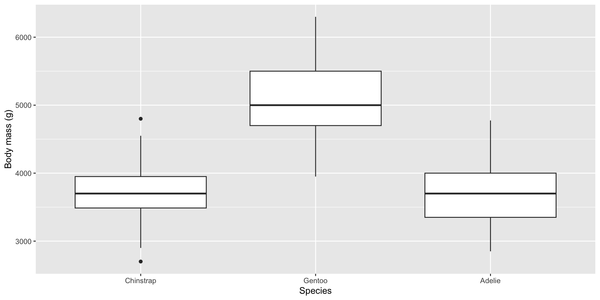
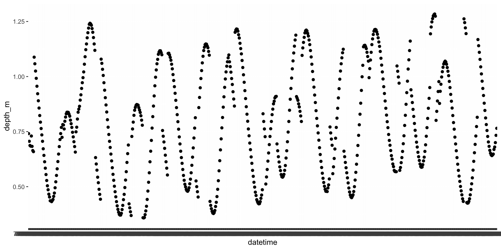

Take charge of your data
Environmental Data Analysis and Visualization
Why do you have to “take charge of your data”?
Example: Cat lovers
A survey asked respondents their name and number of cats. The instructions said to enter the number of cats as a numerical value.
# A tibble: 60 × 3
name number_of_cats handedness
<chr> <chr> <chr>
1 Bernice Warren 0 left
2 Woodrow Stone 0 left
3 Willie Bass 1 left
4 Tyrone Estrada 3 left
5 Alex Daniels 3 left
6 Jane Bates 2 left
7 Latoya Simpson 1 left
8 Darin Woods 1 left
9 Agnes Cobb 0 left
10 Tabitha Grant 0 left
# ℹ 50 more rowsWhat happened?
Take a closer look at the data
What is the “type” of the number_of_cats variable?
# A tibble: 60 × 3
name number_of_cats handedness
<chr> <chr> <chr>
1 Bernice Warren 0 left
2 Woodrow Stone 0 left
3 Willie Bass 1 left
4 Tyrone Estrada 3 left
5 Alex Daniels 3 left
6 Jane Bates 2 left
7 Latoya Simpson 1 left
8 Darin Woods 1 left
9 Agnes Cobb 0 left
10 Tabitha Grant 0 left
# ℹ 50 more rowsWhy did number_of_cats read in as character data?
Sometimes you need to take charge of your data
Moral of the story
If your data does not behave how you expect it to, incorrect type coercion when reading in the data might be the reason.
Go in and investigate your data, apply the fix, save your data, live happily ever after.
Data types
Data types in R
- logical
- double
- integer
- character
- there are more, but we won’t be focusing on those
Logical & character
logical - boolean values TRUE and FALSE
character - character strings
Double & integer
double - floating point numerical values (default numerical type)
integer - integer numerical values (indicated with an L)
Concatenation
Vectors can be constructed using the c() function.
Converting between types - numeric to character
Converting between types - logical to double
Be aware of what happens when you combine different data types in the same vector
R will happily convert between various types without complaint when different types of data are concatenated in a vector, and that’s not always a great thing!
Explicit vs. implicit coercion
Let’s give formal names to what we’ve seen so far:
Explicit coercion is when you call a function like
as.logical(),as.numeric(),as.integer(),as.double(), oras.character()Implicit coercion happens when you use a vector in a specific context that expects a certain type of vector (like combining multiple data types in one)
Example of implicit coercion
Suppose we want to know the type of c(1, "a").
First, I’d look at:
and make a guess about what type R thinks the vector is based on the type of each element of the vector.
Example of implicit coercion
Suppose we want to know the type of c(1, "a").
First, I’d look at:
and make a guess based on these. Then finally I’d check:
Special values
Special values
NA: Not availableNaN: Not a numberInf: Positive infinity-Inf: Negative infinity
Why might we end up with NaN or Inf?
NAs are special ❄️s
NAs are special ❄️s
Some functions will not execute if the data contains NAs. Usually, they include an optional argument to specify whether to remove NAs. Otherwise you can use the drop_na() function to remove them yourself.
Data classes: factors and dates
What are factors?
R uses factors to handle categorical variables: variables that have a fixed and known set of possible values
Factors under the hood
We can think of factors like a character (level labels) and an integer (level numbers) glued together
Working with factors
Data are often read in as character strings by default
# A tibble: 60 × 3
name number_of_cats handedness
<chr> <chr> <chr>
1 Bernice Warren 0 left
2 Woodrow Stone 0 left
3 Willie Bass 1 left
4 Tyrone Estrada 3 left
5 Alex Daniels 3 left
6 Jane Bates 2 left
7 Latoya Simpson 1 left
8 Darin Woods 1 left
9 Agnes Cobb 0 left
10 Tabitha Grant 0 left
# ℹ 50 more rowsDefaut plot of “handedness” counts

Use the forcats package to take charge of factors

Come for the functionality
… stay for the logo

Why use factors?
- Factors are useful when you have true categorical data and you want to override the ordering of character vectors to improve display
- They are also useful in modeling scenarios
- The forcats package provides a suite of useful tools that solve common problems with factors
Forcats functions
- fct_infreq(): Reordering a factor by the frequency of values.
- fct_reorder(): Reordering a factor by another variable.
- fct_relevel(): Changing the order of a factor by hand.
- fct_lump(): Collapsing the least/most frequent values of a factor into “other”.
fct_reorder()
# A tibble: 344 × 8
species island bill_length_mm bill_depth_mm flipper_length_mm body_mass_g
<fct> <fct> <dbl> <dbl> <int> <int>
1 Adelie Torgersen 39.1 18.7 181 3750
2 Adelie Torgersen 39.5 17.4 186 3800
3 Adelie Torgersen 40.3 18 195 3250
4 Adelie Torgersen NA NA NA NA
5 Adelie Torgersen 36.7 19.3 193 3450
6 Adelie Torgersen 39.3 20.6 190 3650
7 Adelie Torgersen 38.9 17.8 181 3625
8 Adelie Torgersen 39.2 19.6 195 4675
9 Adelie Torgersen 34.1 18.1 193 3475
10 Adelie Torgersen 42 20.2 190 4250
# ℹ 334 more rows
# ℹ 2 more variables: sex <fct>, year <int>fct_reorder()
By default species appears in alphabetical order.

fct_reorder()
Use fct_reorder() to reorder the levels of a categorical variable (species) by the value of another variable (body mass)

fct_relevel()
Use fct_relevel() to reorder the levels of a categorical variable (species) manually

You can also modify factors in a dataframe with mutate()
See r4ds for more on factors!
Working with dates
Make a date

- lubridate is the tidyverse-friendly package that makes dealing with dates easier
Dates and times in R
A date. Tibbles print this as <
date>.A time within a day. Tibbles print this as
<time>.A date-time is a date plus a time: it uniquely identifies an instant in time (typically to the nearest second). Tibbles print this as
<dttm>. Elsewhere in R these are called POSIXct, but I don’t think that’s a very useful name.
When you read in data, check data types
# A tibble: 672 × 10
date time datetime depth_m salinity_ppt ph do_mg_l turb_ntu chl_ug_l
<chr> <time> <chr> <dbl> <dbl> <dbl> <dbl> <dbl> <dbl>
1 7/1/15 00:00:24 7/1/15 … 0.741 0.12 8.53 10.2 1.9 4.3
2 7/1/15 00:15:24 7/1/15 … 0.706 0.12 8.45 9.91 2 3.8
3 7/1/15 00:30:24 7/1/15 … 0.687 0.12 8.38 9.68 1.9 4.3
4 7/1/15 00:45:24 7/1/15 … 0.684 0.12 8.29 9.47 2 4.3
5 7/1/15 01:00:23 7/1/15 … 0.73 0.12 7.94 8.49 6.1 10.7
6 7/1/15 01:15:24 7/1/15 … 0.683 0.12 7.67 7.9 6.1 11.6
7 7/1/15 01:30:24 7/1/15 … 0.664 0.12 7.75 8.07 5.3 20.7
8 7/1/15 01:45:24 7/1/15 … 0.659 0.12 7.78 8.02 4.8 5.5
9 7/1/15 02:00:24 7/1/15 … 0.724 0.12 7.81 8 4.5 5.1
10 7/1/15 02:15:24 7/1/15 … 0.782 0.12 7.76 7.88 3.9 27.4
# ℹ 662 more rows
# ℹ 1 more variable: t_c <dbl>When you read in data, check data types
# A tibble: 672 × 10
date time datetime depth_m salinity_ppt ph do_mg_l turb_ntu chl_ug_l
<chr> <time> <chr> <dbl> <dbl> <dbl> <dbl> <dbl> <dbl>
1 7/1/15 00'24" 7/1/15 0:00 0.741 0.12 8.53 10.2 1.9 4.3
# ℹ 671 more rows
# ℹ 1 more variable: t_c <dbl>datewas read in as a charactertimewas read in as a timedatetimewas read in as a character
Why is this a problem?

Using the lubridate functions
Lubridateworks out the date/time format once you specify the order of componentsIdentify the order in which year, month, and day appear in your dates
Then arrange “y”, “m”, and “d” (year, month, day) and “h”, “m”, and “s” (hour, minute, second) in the same order.
That gives you the name of the
lubridatefunction that will parse your date.The resulting output is always in yyyy-mm-dd format
Using the lubridate functions
Coerce flats data into dates and datetimes
# A tibble: 672 × 10
date time datetime depth_m salinity_ppt ph do_mg_l turb_ntu chl_ug_l
<chr> <time> <chr> <dbl> <dbl> <dbl> <dbl> <dbl> <dbl>
1 7/1/15 00:00:24 7/1/15 … 0.741 0.12 8.53 10.2 1.9 4.3
2 7/1/15 00:15:24 7/1/15 … 0.706 0.12 8.45 9.91 2 3.8
3 7/1/15 00:30:24 7/1/15 … 0.687 0.12 8.38 9.68 1.9 4.3
4 7/1/15 00:45:24 7/1/15 … 0.684 0.12 8.29 9.47 2 4.3
5 7/1/15 01:00:23 7/1/15 … 0.73 0.12 7.94 8.49 6.1 10.7
6 7/1/15 01:15:24 7/1/15 … 0.683 0.12 7.67 7.9 6.1 11.6
7 7/1/15 01:30:24 7/1/15 … 0.664 0.12 7.75 8.07 5.3 20.7
8 7/1/15 01:45:24 7/1/15 … 0.659 0.12 7.78 8.02 4.8 5.5
9 7/1/15 02:00:24 7/1/15 … 0.724 0.12 7.81 8 4.5 5.1
10 7/1/15 02:15:24 7/1/15 … 0.782 0.12 7.76 7.88 3.9 27.4
# ℹ 662 more rows
# ℹ 1 more variable: t_c <dbl>Coerce flats data into dates and datetimes
# A tibble: 672 × 10
date time datetime depth_m salinity_ppt ph do_mg_l
<date> <time> <dttm> <dbl> <dbl> <dbl> <dbl>
1 2015-07-01 00:00:24 2015-07-01 00:00:00 0.741 0.12 8.53 10.2
2 2015-07-01 00:15:24 2015-07-01 00:15:00 0.706 0.12 8.45 9.91
3 2015-07-01 00:30:24 2015-07-01 00:30:00 0.687 0.12 8.38 9.68
4 2015-07-01 00:45:24 2015-07-01 00:45:00 0.684 0.12 8.29 9.47
5 2015-07-01 01:00:23 2015-07-01 01:00:00 0.73 0.12 7.94 8.49
6 2015-07-01 01:15:24 2015-07-01 01:15:00 0.683 0.12 7.67 7.9
7 2015-07-01 01:30:24 2015-07-01 01:30:00 0.664 0.12 7.75 8.07
8 2015-07-01 01:45:24 2015-07-01 01:45:00 0.659 0.12 7.78 8.02
9 2015-07-01 02:00:24 2015-07-01 02:00:00 0.724 0.12 7.81 8
10 2015-07-01 02:15:24 2015-07-01 02:15:00 0.782 0.12 7.76 7.88
# ℹ 662 more rows
# ℹ 3 more variables: turb_ntu <dbl>, chl_ug_l <dbl>, t_c <dbl>Now it knows the dates are actually datetimes
What if your data contain year, month, day, etc. in separate columns?
# A tibble: 672 × 4
year month day depth_m
<chr> <chr> <chr> <dbl>
1 7 1 15 0.741
2 7 1 15 0.706
3 7 1 15 0.687
4 7 1 15 0.684
5 7 1 15 0.73
6 7 1 15 0.683
7 7 1 15 0.664
8 7 1 15 0.659
9 7 1 15 0.724
10 7 1 15 0.782
# ℹ 662 more rowsWhat if your data contain year, month, day, etc. in separate columns?
Use the make_date() or make_datetime functions!
# A tibble: 672 × 2
date depth_m
<date> <dbl>
1 0007-01-15 0.741
2 0007-01-15 0.706
3 0007-01-15 0.687
4 0007-01-15 0.684
5 0007-01-15 0.73
6 0007-01-15 0.683
7 0007-01-15 0.664
8 0007-01-15 0.659
9 0007-01-15 0.724
10 0007-01-15 0.782
# ℹ 662 more rowsWhat if you want to get individual components of date/time data?
Use the year(), month(), mday() (day of the month), yday() (day of the year, also known as julian day), wday() (day of the week), hour(), minute() or second() functions
AE-07
- clone ae-07 from GitHub > open
type-coercion.qmd - What is the type of the given vectors? First, guess. Then, try it out in R.